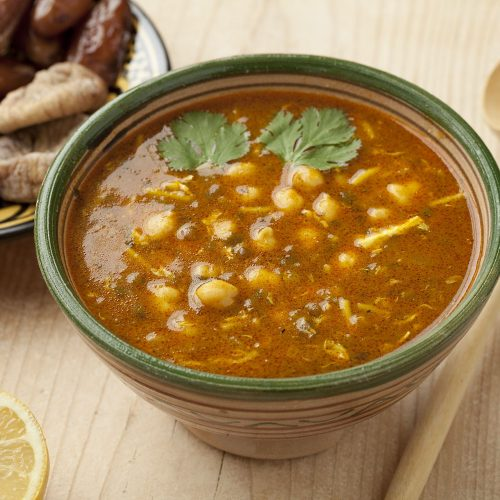

Home
Harira

Description
Harira is the soup that Moroccans traditionally use to break the fast every night of Ramadan. Season to taste with mint leaves, cinnamon, salt, and pepper.
Ingredients
- 1 pound cubed lamb meat
- 1 yellow onion, chopped
- 1 red onion, chopped
- ¾ cup chopped celery
- ½ cup chopped fresh cilantro
- 2 tablespoons margarine
- 1 ½ teaspoons ground black pepper
- 1 teaspoon ground turmeric
- 1 teaspoon ground cinnamon
- ¼ teaspoon ground ginger
- ¼ teaspoon ground cayenne pepper
- 1 (29 ounce) can diced tomatoes, juice reserved
- 7 cups water
- ¾ cup green lentils
- 1 (15 ounce) can garbanzo beans, drained
- 4 ounces vermicelli pasta
- 2 eggs, beaten
- 1 lemon, juiced
Steps
- Combine lamb, onions, celery, cilantro, margarine, pepper, turmeric, cinnamon, ginger, and cayenne in a large soup pot over low heat. Cook, stirring frequently, for 5 minutes. Pour in tomatoes (without juice) and simmer for 15 minutes.
- Add water, reserved tomato juice, and lentils. Bring to a boil, then reduce the heat, cover, and simmer for 1 hour 50 minutes.
- Increase the heat to medium-high and add garbanzo beans and vermicelli pasta. Cook until noodles are tender yet firm to the bite, about 10 minutes. Stir in eggs and lemon juice and cook for 1 minute.